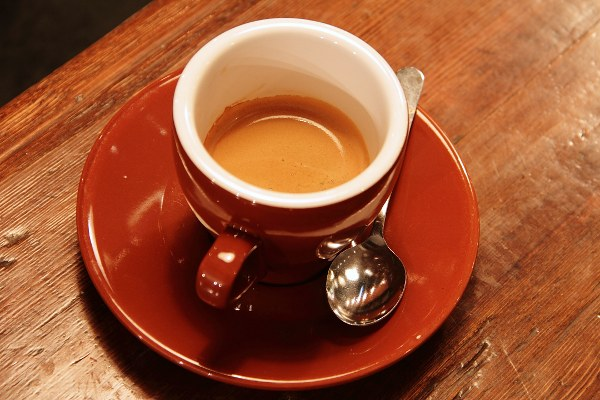

[plugin per photoshop · v0.16.5]
WGT-01
Pattern, stili generativi e impaginazione. Tutto parte dalla scala di grigi della tua immagine.
Un pannello,
tre strumenti
WGT-01 vive in un pannello di Photoshop, accanto ai livelli. Scegli uno strumento nel pannello: il risultato compare nel documento, sopra il livello di partenza, e resta modificabile.
Ripete un elemento e ne decide dimensione e posizione in base al tono: cresce nelle ombre, sparisce nelle luci.
Dieci stili generativi, dal dither alle curve di livello, applicati a tutti i livelli visibili. Quattro si esportano in SVG.
Impagina il testo di manifesti, post e storie: riconosce il formato, mette il testo su una griglia, evita il soggetto e tiene il contrasto leggibile.

La libreria del centro presenta
Caffè e caratteri
Giovedì 12 novembre, ore 18
Lodi, via Garibaldi
Ingresso libero
10 stili,
una foto
Scegli uno stile e trascina il cursore per confrontarlo con l’originale. È una versione leggera, calcolata nel browser: nel plugin ogni stile ha i suoi controlli e preset.
Un elemento,migliaiadi posizioni
Pattern ripete un elemento e ne decide la dimensione in base al tono: cresce nelle ombre, sparisce nelle luci. Cambia elemento o carica il tuo.
- Elementi da forme pronte o da un tuo file SVG, PNG o JPG.
- Elementi diversi per le zone scure, medie e chiare.
- Rotazione e scala casuali; “Variante” rimescola solo la parte casuale.
Rastervettoriale
Halftone, Incisione, Linee di flusso e Curve di livello si esportano anche in SVG. Che differenza fa? Ingrandisci lo stesso retino e guarda.
PNG: una griglia di pixel
Ogni punto del retino è fatto di quadratini. Se ingrandisci o stampi grande, i bordi si sgranano.
SVG: forme, non pixel
Ogni punto è descritto come un cerchio: centro e raggio. Resta nitido a qualsiasi misura e lo apri in Illustrator per cambiarlo.
E per la stampa: quattro lastre
In tipografia ogni inchiostro (ciano, magenta, giallo e nero) ha la sua lastra, con il retino ruotato a un angolo diverso. L’Halftone esporta in SVG le quattro lastre già separate, una per livello. Spegnine qualcuna per vedere come si sommano.
Il testotrova il suoposto
Scrivi titolo, informazioni e invito all’azione. Type riconosce il formato, prende i colori dal brand o dalla foto con un contrasto sempre leggibile, sceglie i caratteri tra quelli installati e prova sei composizioni evitando il soggetto.
Tutto sull’asse centrale, il testo in basso sotto il soggetto.
Anteprima illustrativa. Nel plugin le misure si calcolano sul tuo documento e i testi restano livelli modificabili.
Il circolo astronomico presenta
Notte dei razzi
Sabato 14 novembre, ore 21
Piazza della Vittoria, Lodi
Ingresso libero
Provalo
Trascina una tua foto nella pagina di prova e guardala in Dither, Halftone o ASCII. Il calcolo avviene nel browser: la foto non lascia il tuo computer.